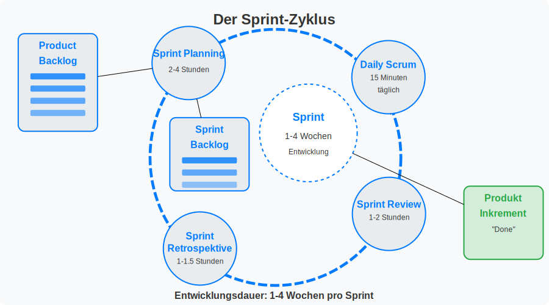
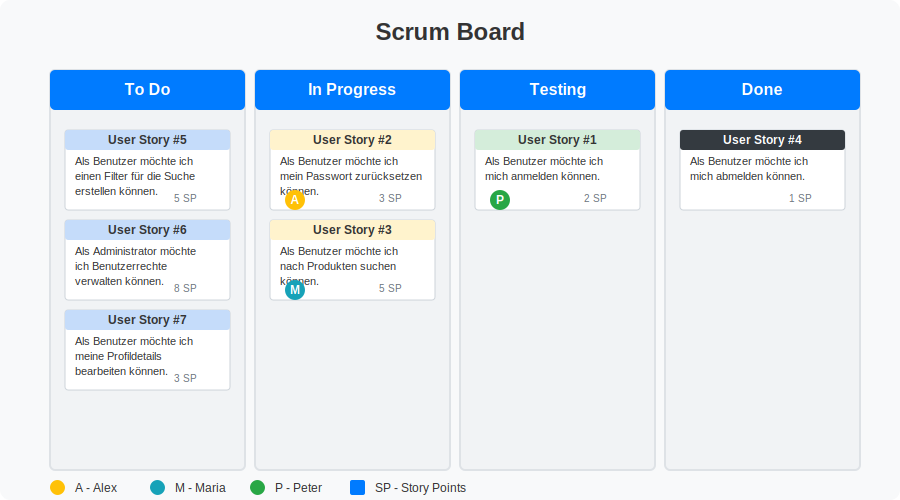
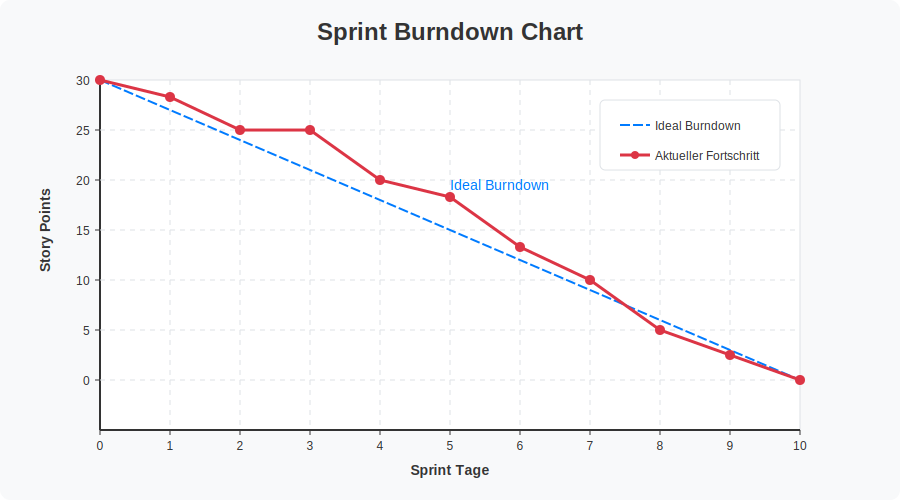
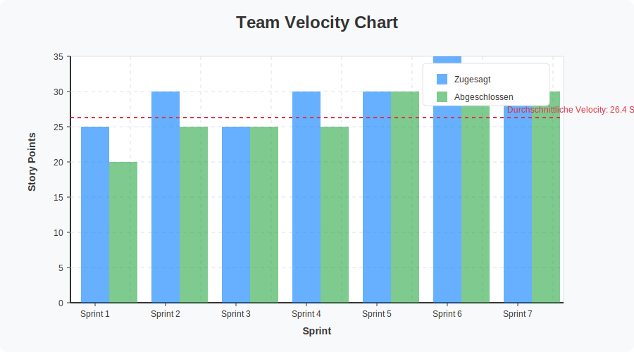

Scrum - Eine illustrierte Einführung#
Von Wasserfall zu Agile#
Traditionellerweise werden Projekte nach dem Wasserfall-Modell geplant und umgesetzt. In diesem Modell wird das Projekt in die Phasen Problemanalyse, Planung, Umsetzung und Evaluation unterteilt. Diese Phasen werden eine nach der anderen durchlaufen. Diese Vorgehensweise hat den Nachteil, dass es schwierig ist, auf Änderungen zu reagieren. Dies ist insbesondere in der Softwareentwicklung ein Problem. Oft erkennen Kunden erst während der Entwicklung, was für Anforderungen sie an das Produkt haben.
Wasserfall-Modell:
Sequentielle Phasen
Wenig Flexibilität bei Änderungen
Gesamte Planung im Voraus
Lange Zeit bis zur Fertigstellung
Feedback erst am Ende des Projekts
Diese Problematik hat im Software Engineering zu Agilen Methoden geführt. Die Kernprinzipien Agiler Methoden wurden im Agilen Manifest festgehalten.
Agiles Manifest#
Wir erschließen bessere Wege, Software zu entwickeln, indem wir es selbst tun und anderen dabei helfen. Durch diese Tätigkeit haben wir diese Werte zu schätzen gelernt:
Individuen und Interaktionen mehr als Prozesse und Werkzeuge
Funktionierende Software mehr als umfassende Dokumentation
Zusammenarbeit mit dem Kunden mehr als Vertragsverhandlung
Reagieren auf Veränderung mehr als das Befolgen eines PlansDas heisst, obwohl wir die Werte auf der rechten Seite wichtig finden, schätzen wir die Werte auf der linken Seite höher ein.[1]
Das Agile Manifest wurde 2001 von 17 Softwareentwicklern verfasst und hat seitdem die Art und Weise, wie Software entwickelt wird, grundlegend verändert. Neben den vier Werten definiert das Agile Manifest auch zwölf Prinzipien, die agile Teams leiten sollen:
Kundenzufriedenheit durch frühe und kontinuierliche Auslieferung von wertvoller Software
Willkommenheissen von Anforderungsänderungen, selbst spät in der Entwicklung
Häufige Auslieferung funktionierender Software (Wochen statt Monate)
Tägliche Zusammenarbeit von Fachexperten und Entwicklern
Aufbau von Projekten um motivierte Individuen
Bevorzugung von direkter Kommunikation
Funktionsfähige Software als wichtigstes Fortschrittsmass
Förderung nachhaltiger Entwicklung durch gleichbleibendes Tempo
Kontinuierliche Aufmerksamkeit für technische Exzellenz und gutes Design
Einfachheit – die Kunst, die Menge nicht getaner Arbeit zu maximieren
Selbstorganisierende Teams
Regelmässige Reflexion und Anpassung der Arbeitsweise
Scrum#
Scrum ist eine der beliebtesten agilen Techniken.
Sie wurde erstmals von Hirotaka Takeuchi und Ikujiro Nonaka 1986 unter dem Titel
„The New New Product Development Game” in der Harvard Business Review
vorgestellt.
Der Name “Scrum” stammt aus dem Rugby und beschreibt dort eine Spielsituation, in der das Team eng zusammenarbeitet, um den Ball wieder ins Spiel zu bringen. Diese Metapher verdeutlicht den kollaborativen Charakter der Methode.

Grundsätzliche Vorgehensweise#
Scrum verfolgt einen iterativen und inkrementellen Ansatz zur Softwareentwicklung. Statt das gesamte Projekt von Anfang bis Ende durchzuplanen, wird die Entwicklung in kurze Zeitabschnitte (Sprints) unterteilt, in denen jeweils ein funktionierendes, wenn auch unvollständiges, Produkt steht.
Im Zentrum des Scrum-Prozesses steht das Product Backlog. Es enthält alle Anforderungen, Features und Verbesserungen, die für das Produkt umgesetzt werden sollen. Diese werden als User Stories formuliert, die aus Kundensicht beschreiben, welche Funktionalität gewünscht wird. Beispiel: “Als Benutzer möchte ich mich anmelden können, um auf mein Konto zuzugreifen.”
Das Product Backlog wird vom Product Owner gepflegt und nach Prioritäten geordnet. Der Product Owner ist der Vertreter des Kunden im Projekt. Die wichtigsten Aspekte sind:
Priorisierung: Die wichtigsten Items stehen oben und werden zuerst bearbeitet
Detaillierung: Je höher die Priorität, desto ausführlicher ist die Beschreibung
Flexibilität: Das Backlog kann jederzeit angepasst werden, wenn sich Anforderungen ändern
Transparenz: Alle Teammitglieder haben Einblick in das Backlog
Zu Beginn jedes Sprints wählt das Team die Items mit der höchsten Priorität aus dem Product Backlog aus und überführt sie in das Sprint Backlog. Das Sprint Backlog enthält die konkreten Aufgaben, die während des Sprints umgesetzt werden sollen.
Die grundlegenden Prinzipien von Scrum sind:
Transparenz: Alle wichtigen Aspekte des Prozesses sind sichtbar
Überprüfung: Regelmässige Inspektion der Ergebnisse und des Prozesses
Anpassung: Kontinuierliche Verbesserung basierend auf den Erkenntnissen
Ablauf eines Sprints#
Ein Sprint ist ein Zeitraum von 1 bis 4 Wochen, in dem ein Teil des Projektes umgesetzt wird. Am Ende eines Sprints steht eine funktionsfähige Version des Produktes. Der Sprint kann in vier Elemente unterteilt werden (die vier blauen Kreise in der Grafik):

Sprint-Planung: In der Sprint-Planung wird festgelegt, welche Aufgaben im Sprint umgesetzt werden sollen. Der Product Owner stellt die Aufgaben vor und das Team entscheidet, welche Aufgaben im Sprint umgesetzt werden.
Zeitrahmen: Typischerweise 2-4 Stunden für einen zweiwöchigen Sprint
Ergebnis: Sprint-Ziel und Sprint Backlog
Teilnehmer: Scrum Master, Product Owner, Entwicklungsteam
Sprint: In der Sprint-Phase wird das Sprint Backlog abgearbeitet. Das Team arbeitet an den Aufgaben, die in der Sprint-Planung festgelegt wurden. Am Ende des Sprints steht eine funktionsfähige Version des Produktes.
Zeitrahmen: 1-4 Wochen (konstante Länge)
Fokus auf das Sprint-Ziel
Keine Änderungen, die das Sprint-Ziel gefährden
Daily Scrum (Daily Standup): Das Daily Scrum ist ein tägliches Meeting von maximal 15 Minuten, bei dem jedes Teammitglied berichtet, was es seit dem letzten Meeting getan hat, was es als nächstes tun wird und welche Hindernisse es dabei gibt. Es dient der Koordination innerhalb des Teams.
Drei Schlüsselfragen:
Was habe ich gestern getan, um das Sprint-Ziel zu erreichen?
Was werde ich heute tun, um das Sprint-Ziel zu erreichen?
Gibt es Hindernisse, die mich oder das Team blockieren?
Stehend durchgeführt, um die Kürze zu gewährleisten
Gleiche Zeit, gleicher Ort jeden Tag
Sprint Review und Retrospektive: Nach Abschluss des Sprints wird das Ergebnis im Sprint Review dem Product Owner und ggf. weiteren Stakeholdern präsentiert. In der Retrospektive analysiert das Team den vergangenen Sprint und identifiziert Verbesserungspotenziale für zukünftige Sprints.
Sprint Review:
Zeitrahmen: 1 Stunde pro Sprintwoche
Informelle Präsentation des erreichten Inkrements
Feedback von Stakeholdern
Aktualisierung des Product Backlogs
Sprint Retrospektive:
Zeitrahmen: 45 Minuten bis 1,5 Stunden
Fokus auf Prozessverbesserung
Drei Hauptfragen:
Was lief gut im Sprint?
Was könnte verbessert werden?
Welche Massnahmen werden wir im nächsten Sprint umsetzen?
Die Rollen im Scrum-Prozess#
Im Scrum-Framework gibt es drei klar definierte Rollen, die zusammen das Scrum-Team bilden:
Product Owner:
Vertreter der Kundenperspektive und Stakeholder
Verantwortlich für die Maximierung des Produktwerts
Hauptaufgaben:
Pflege und Priorisierung des Product Backlogs
Klare Kommunikation der Produktvision
Festlegung von Anforderungen und Akzeptanzkriterien
Abnahme der fertigen Funktionalitäten
Entscheidung über Release-Termine und -Inhalte
Scrum Master: Der Scrum Master fungiert als Servant Leader für das Team und die Organisation.
Seine Hauptaufgaben umfassen:Moderation der Scrum-Events (Daily Scrum, Sprint Planning, Review, Retrospektive)
Beseitigung von Hindernissen, die das Team bei der Arbeit behindern
Coaching des Teams in Selbstorganisation und funktionsübergreifender Zusammenarbeit
Schaffung eines produktiven Umfelds für hohe Wertschöpfung
Abschirmung des Teams vor externen Störungen und Ablenkungen
Förderung von Veränderungen, die die Produktivität des Teams erhöhen
Entwicklungsteam: Das Entwicklungsteam hat folgende Eigenschaften:
Besteht typischerweise aus 3-9 Personen (optimale Größe für Zusammenarbeit)
Ist selbstorganisierend - das Team entscheidet selbst, wie es die Arbeit erledigt
Kennt keine Hierarchie oder spezielle Titel innerhalb des Teams
Trägt als Ganzes die Verantwortung für das Produktinkrement
Arbeitet gemeinsam an den Sprint-Aufgaben
Passt seine Arbeitsweise kontinuierlich an die Herausforderungen im Projekt an
Interdisziplinär - vereint alle notwendigen Fähigkeiten zur Produktentwicklung
User Stories und Story Points#
User Stories sind ein zentrales Element in Scrum und dienen dazu, Anforderungen aus Nutzerperspektive zu formulieren:
Format: “Als [Rolle] möchte ich [Funktion/Feature], damit [Nutzen/Wert]”
INVEST-Kriterien für gute User Stories:
Independent (Unabhängig)
Negotiable (Verhandelbar)
Valuable (Wertvoll)
Estimable (Schätzbar)
Small (Klein)
Testable (Testbar)
Zur Abschätzung des Arbeitsaufwands für User Stories werden häufig Story Points verwendet:
Relative Masseinheit für Komplexität, Aufwand und Risiko
Werden oft mit Fibonacci-Zahlen ausgedrückt (1, 2, 3, 5, 8, 13, 21…)
Vorteile:
Vermeidet die Probleme von Zeitschätzungen
Berücksichtigt unterschiedliche Geschwindigkeiten von Teammitgliedern
Fokussiert auf Komplexität statt Zeit
Hilfsmittel zur Steuerung#
Zur Überwachung des Projektfortschritts können verschiedene Werkzeuge eingesetzt werden:
Scrum Board: Ein physisches oder digitales Board, auf dem die Aufgaben visualisiert werden. Es zeigt den aktuellen Status der Aufgaben (To Do, In Progress, Done).

Burndown Chart: Ein Diagramm, das den verbleibenden Aufwand im Sprint darstellt. Es zeigt, wie viel Arbeit noch zu erledigen ist und ob das Team im Zeitplan liegt.

Velocity: Eine Kennzahl, die angibt, wie viel Arbeit das Team in einem Sprint erledigt hat. Sie wird in Story Points gemessen und hilft, die Kapazität des Teams für zukünftige Sprints abzuschätzen.

Definition of Done: Eine Checkliste von Kriterien, die erfüllt sein müssen, bevor eine User Story als abgeschlossen betrachtet werden kann:
Code wurde überprüft (Code Review)
Tests wurden geschrieben und bestanden
Dokumentation wurde aktualisiert
Akzeptanzkriterien wurden erfüllt
Product Owner hat die Funktionalität abgenommen
Vorteile von Scrum#
Scrum bietet zahlreiche Vorteile gegenüber traditionellen Entwicklungsmethoden:
Erhöhte Transparenz: Durch regelmässige Meetings und sichtbare Artefakte ist der Projektfortschritt für alle Beteiligten klar erkennbar.
Schnelleres Feedback: Durch die regelmässige Auslieferung funktionierender Software können Kunden frühzeitig Feedback geben.
Höhere Qualität: Kontinuierliche Integration, häufige Tests und die Definition of Done fördern die Qualität des Produkts.
Bessere Vorhersagbarkeit: Die Velocity ermöglicht genauere Vorhersagen über den Projektfortschritt.
Höhere Motivation: Selbstorganisation und regelmässige Erfolge steigern die Motivation im Team.
Risikominimierung: Probleme werden frühzeitig erkannt und können behandelt werden, bevor sie kritisch werden.
Anpassungsfähigkeit: Änderungen können ohne grossen Aufwand in das Projekt integriert werden.
Herausforderungen bei der Einführung von Scrum#
Die Umstellung auf Scrum kann mit verschiedenen Herausforderungen verbunden sein:
Kultureller Wandel: Agile Methoden erfordern oft einen Kulturwandel in der Organisation.
Fehlendes Verständnis: Scrum wird manchmal falsch verstanden oder unvollständig implementiert.
Unklare Rollen: Die Rollen und Verantwortlichkeiten in Scrum müssen klar definiert sein.
Integration mit bestehenden Strukturen: Die Integration von Scrum in bestehende Unternehmensstrukturen kann herausfordernd sein.
Fazit#
Scrum hat sich als effektive Methode für die agile Softwareentwicklung etabliert und wird zunehmend auch in anderen Branchen eingesetzt. Die Kombination aus klaren Rollen, definierten Events und hilfreichen Artefakten bietet einen strukturierten Rahmen, der gleichzeitig Flexibilität ermöglicht.
Die iterative Herangehensweise mit kurzen Feedback-Zyklen ermöglicht eine kontinuierliche Anpassung an veränderte Anforderungen und eine frühzeitige Wertschöpfung. Gleichzeitig fördert Scrum die Zusammenarbeit im Team und mit dem Kunden.
Für eine erfolgreiche Implementierung von Scrum ist es wichtig, die Grundprinzipien zu verstehen und konsequent anzuwenden, gleichzeitig aber auch die Methode an die spezifischen Bedürfnisse der Organisation anzupassen.